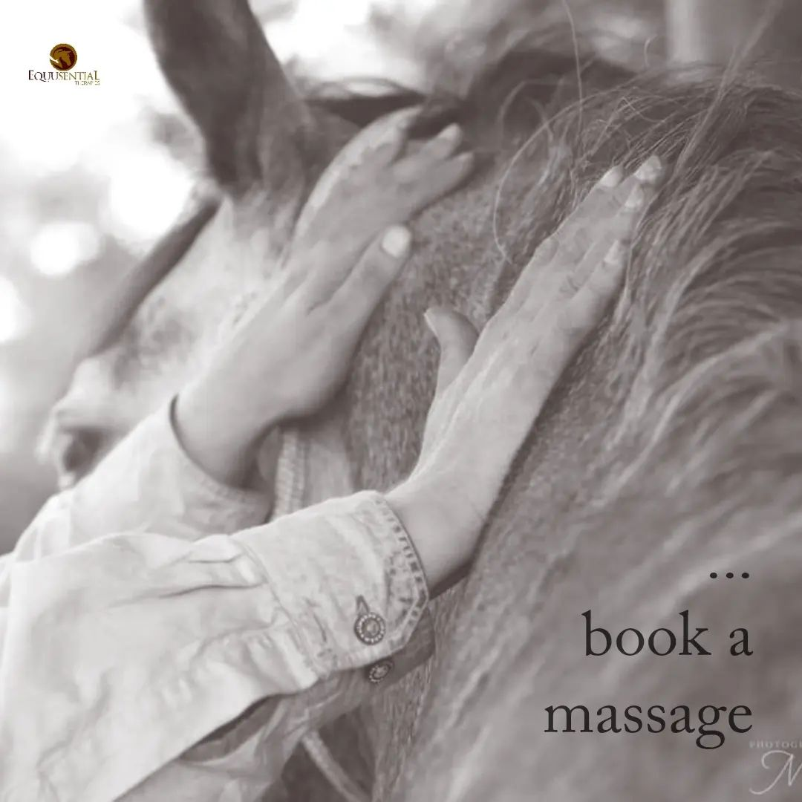

Equusential Blog Blog Posts

Posted on 08 February 2023
My horse hates being touched and brushed!
Why do some horses hate when you touch them in certain areas? Can massage help this?
Some owners might say they noticed their horse dislikes being touched or brushed. Commonly on the girth area and back. Reactions from the horse might include; moving away; pinning ears; trying to bite; skin quivers away from the touch.
Owners find this upsetting and confusing - why does it respond poorly to something 'nice'? They ask me for my professional help and advice in the hopes that a massage treatment might help the horse feel better.
Why does my horse hate to be touched or brushed?
The short and most common answer for why your horse hates touch is that they are in pain, or have been in pain recently, in that area and therefore associates being brushed or touched with something painful.
Horses become touch-averse when they have pain in the skin or underlying structures such as the muscles, joints and organs.
The skin is the largest organ of the body. Part of the skin is sensory nerve endings which enable the body to feel pain, heat, cold and pressure. Nerve endings react to stimuli then the body takes reflexive action.
Your horse will move away from a painful or uncomfortable stimulus to protect its body from perceived danger.
Muscular discomfort is a common cause. Healthy muscle and the covering skin is soft, smooth, warm, hydrated, toned and pliable. Unhealthy muscle and skin can be: contracted, tense, tight, knotted, overly warm or cold to the touch, excessively inflamed or overdeveloped. These are all visual and sensory cues that your horse might be in muscular pain. These areas need therapeutic attention.
Sores and broken or rough skin are also painful - the horse will not want to be touched on or near these areas.
Some horses behaviorally are averse to touch because they associate it with pain or discomfort. For example, a horse with a bad-fitting saddle or girth will not like touch in the girth area or saddle area. Another reason may be that the touch, or brush, is too harsh. Horses are sensitive, so trying a softer touch or brush may benefit. An example would be using a wooden curry comb meant for meatier, less sensitive parts - over more-sensitive bony points such as the face or ribs.
How can massage help a horse who dislikes touch?
The majority of the cases I treat with massage improve their touch response - because the underlying issue is muscular discomfort. Touch aversion goes away or lessens significantly after treatments.
Here are some reasons why massage works for this issue:
- Studies show that massage increases relaxation.
- Massage is an excellent treatment and comfort for skin and muscles.
- Massage lowers heart rate and improves behaviour.
- Massage enhances circulation and improves relaxation and pain control.
- It improves nerve response and brings pleasant sensations of warmth, spatial awareness and comfort to the skin and muscles.
- Massage works through muscle and skin tightness and adhesion (knots): resolving dull and painful feelings.
- It also increases the range of motion, elasticity and hydration of skin and muscles.
- Massage helps return the skin and muscles to a healthier state while giving the horse endorphins and pain relief.
- Massage is a positive association to touch in what was a painful area.
- It improves their confidence and feeling of safety and well-being in their body.
An effective massage practitioner treats the horse sympathetically while acknowledging their behaviour response which is a communication of pain and inherent sensitivity, signs of which may have been ignored in the past by its handlers, trainers and owners. Positive interactions help build trust in human contact.
Massage effectively loosens the constriction of physical and emotional tension - encouraging a flow of motion. Horses want to feel their best. Optimum movement is essential to their survival. Therefore a horse who receives regular and effective massage will improve their physical and emotional well-being and trust in people.
What to do if touch aversion remains after a massage?
If the horse is seriously injured - or has a deeply ingrained behavioural response to touch- it will take longer to resolve with regular massages. Of the hundreds of horses I have treated over the years, only a few have remained seriously touch-averse in certain areas after repeated treatments - this has been where there is a significant underlying health issue that requires a veterinary referral or other specialist attention. There are also contraindications to massage: if your horse falls into this category, then massage of all or parts of their body may not be the appropriate treatment.
I hope this blog has helped you to realise that your horse does not want to be touched or brushed because it is having a pain response to the direct touch or what it might mean (ex: pain from riding). Your horse is trying to tell you that it is in pain and wants to protect the area. Massage greatly benefits horses who are averse to touch or brushing. You can also try different pressure of touch to see if that helps. If your horse receives regular bodywork from a suitably qualified professional massage therapist and is still touch-averse: it may be time to look at other experts to help. Suggestions are saddle fitters, veterinarians, veterinary acupuncturists and dietary specialists.